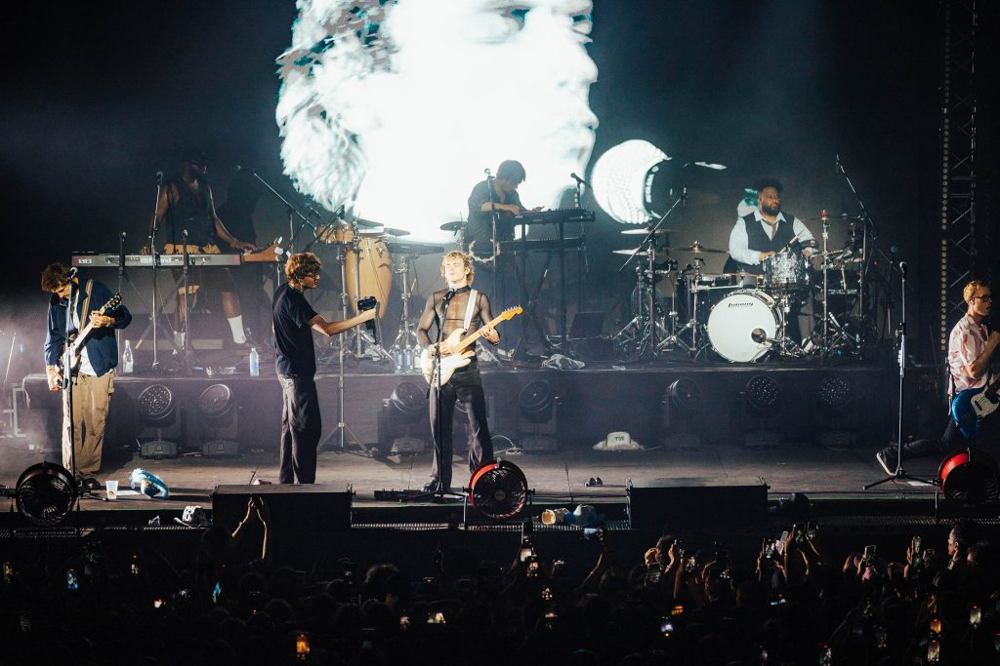
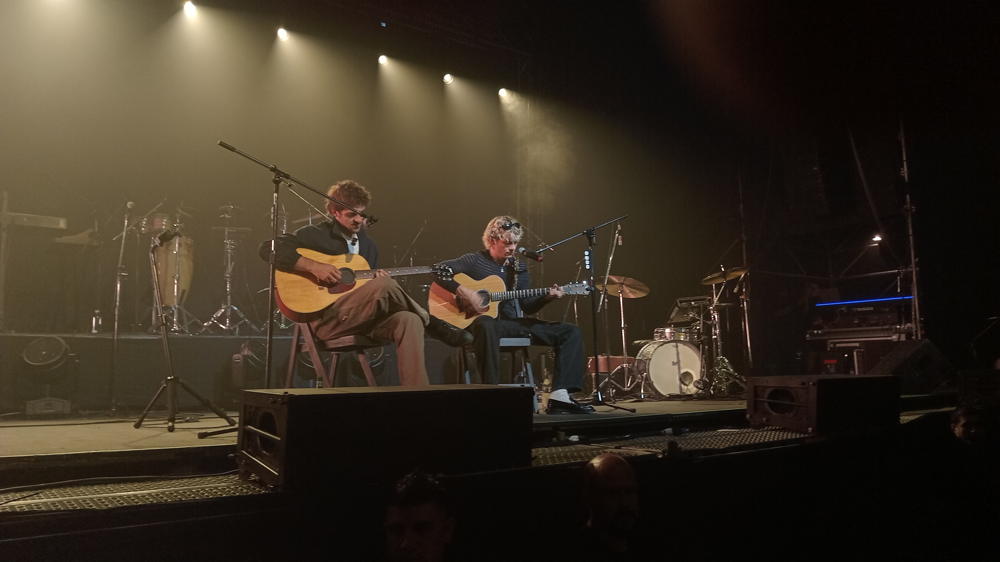
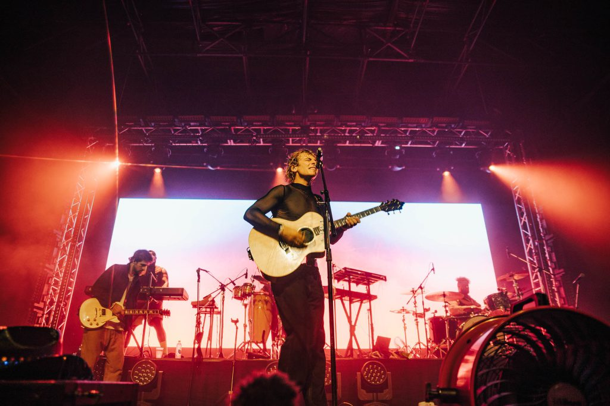

OBSESSION TOUR 2025
El pasado 25 de abril, The Driver Era volvió a Buenos Aires para dar un show que, a pesar de algunos contratiempos, terminó siendo una noche inolvidable. Ross y Rocky se reencontraron con el público argentino y, como siempre, la energía fue mutua: pura emoción, saltos y voces al unísono.
Una experiencia VIP acústica y mágica
Antes del show principal, quienes accedimos al VIP tuvimos una experiencia súper íntima con Ross y Rocky. Arrancó a las 18:30 hs, y aunque estaba previsto que terminara a las 19:00, se quedaron hasta las 19:15, a pesar de que su manager ya los estaba apurando para irse.
Ellos, cada uno con su guitarra acústica, hicieron un repaso por su historia musical, con una fuerte carga de nostalgia recordando su época con R5. Este fue el setlist del show acústico:
- Wild Hearts
- Lay Your Head Down
- Forget About You
- Loud
- Bronco (se las pedí y Ross me escuchó!)
- Dark Side
- I Know You Got Away
- If I Can’t Be With You (nadie se sabía el segundo verso, así que lo canté desde la valla y Ross y Rocky me miraron!!!)
- Back to You (le pedí a Ross que haga un poco de guitarra principal… y lo hizo)
- I Can’t Say I’m in Love
- Repeating Days
- OMG plz don’t come around
- Smile
Podés ver algunos momentos del soundcheck en mi Instagram!!!
Eso sí: nos habían prometido un artículo de merchandising incluido, pero solo nos dieron una tote bag vacía. Un detalle que quedó medio flojo para lo que fue el valor de la entrada VIP.
Un show con demora, pero con entrega total
El concierto empezó con una hora de retraso, ya que hubo muchas personas que debieron ser asistidas y retiradas por desmayos antes de que arranque. Fue un momento tenso, pero por suerte todo se manejó con responsabilidad y cuando comenzó el show, la banda salió a darlo todo.
Grandes éxitos y momentos únicos
El setlist no decepcionó. Sonaron temas como Get Off My Phone, Low y una versión mágica de Afterglow, donde solo estaban Ross y Rocky en escena, hasta que el resto de la banda se sumó al final. También nos sorprendieron con Nobody Knows, un tema que no venían tocando en sus shows en Estados Unidos, así que fue un regalazo inesperado para el público argentino. Fantasy tuvo uno de los momentos más musicales de la noche: Ross y Rocky se lanzaron en una especie de “pregunta y respuesta” con licks de guitarra, muy al estilo John Mayer, que dejó a todos fascinados. Y como ya es costumbre, Malibu tuvo su clásico momento de salsa, con Ross soltándose a bailar y contagiando a todos con su carisma. Por si fuera poco, tocaron el álbum Obsession completo, algo que los fans agradecimos muchísimo.
Una noche para recordar
A pesar de los imprevistos, lo que queda es la emoción de haber vivido otra noche con The Driver Era. El cariño que tienen por Argentina se nota, y la conexión con sus fans es algo que trasciende las canciones. Si estuviste ahí, sabés que fue un viaje de ida. Y si no, cruzamos los dedos para que vuelvan pronto… porque una noche así no alcanza!!!
LIVE ON TOUR 2024


SIDE SHOW TEATRO VORTERIX Y LOLLAPALOOZA ARGENTINA
TEATRO VORTERIX
La banda se presentó en el Teatro Vorterix el día 14 de Marzo. Conocían a la perfección el lugar, ya que habían realizado dos conciertos sold out en 2022. El show contó con Juku Ares como artista soporte, y fue la primera vez que abrían una gira comenzando por Buenos Aires, cuando normalmente solían venir al final del tour. Se notó en el escenario la energía y la satisfacción de tocar ante el mejor público del mundo, dicho en reiteradas ocasiones por ambos. Al comenzar el concierto, Ross lo mencionó claramente luego de tocar "Get off My Phone"
“The best thing about starting the tour in Argentina is you start at the top, and now its just downhill from here” - Ross Lynch in Buenos Aires
— Ross Lynch News (@DailyRoss) March 15, 2024
📹: @khairgh #LollaAR pic.twitter.com/SnpFlDMzqO
La banda realizó tanto el show como el M&G sin complicaciones ni demoras. El pronóstico del tiempo fue una preocupación para todos, ya que toda la Ciudad de Buenos Aires sufrió lluvias muy fuertes durante varios días previos al show. Gracias a Dios, durante ese jueves no hubo inclemencias climáticas y todos pudieron formar fila fuera del teatro sin inconvenientes a la espera de la apertura de puertas.

AFTERGLOW

ON MY OWN

Setlist del show
LOLLAPALOOZA
La banda se presentó el día sábado 16 de Marzo en el Hipódromo de San Isidro. Fue su primera presentación en un festival en el país, y fueron los encargados de cerrar el día en el escenario alternativo. A pesar de haber tocado en simultáneo con SZA (quien fue la headliner del día junto a Sam Smith), un público masivo se acercó desde temprano. Eran las 18:00 hs aprox cuando ya se empezó a acumular gente en el vallado, anticipando lo que sería uno de los mejores conciertos del festival. Los grandes éxitos no decepcionaron a un público que acompañó desde el primer momento entregandolo todo. A pesar de las lluvias que golpearon el hipódromo, el campo estuvo en condiciones para realizar el evento. Las zonas de barro o la poca iluminación del predio no impidieron que Ross y Rocky deslumbraran a la ciudad de San Isidro con su estilo y energía. Es sin dudas el concierto más grande que han realizado en su carrera.


The GIRLFRIEND Tour 2021 - 2022

NOTA: Esta gira incluye conciertos correspondientes al disco, así como también los pospuestos debido a la pandemia del COVID-19
Fechas de la gira